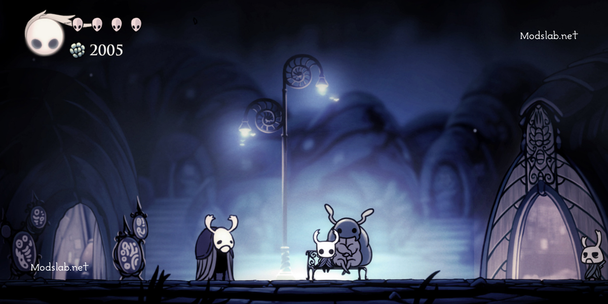
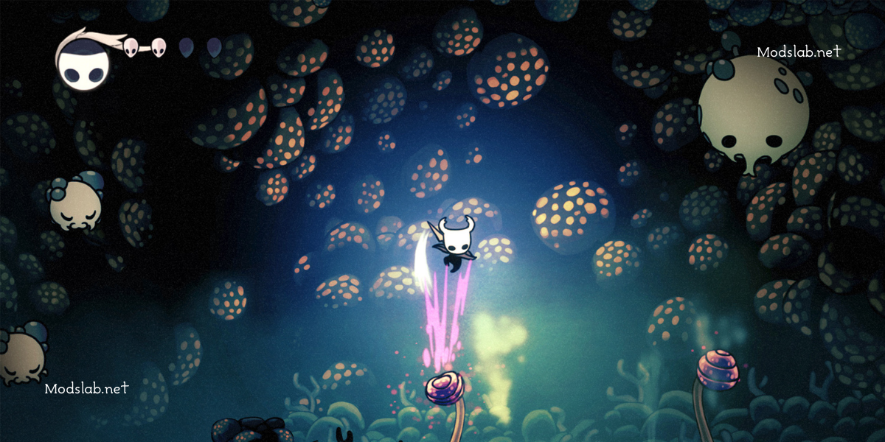
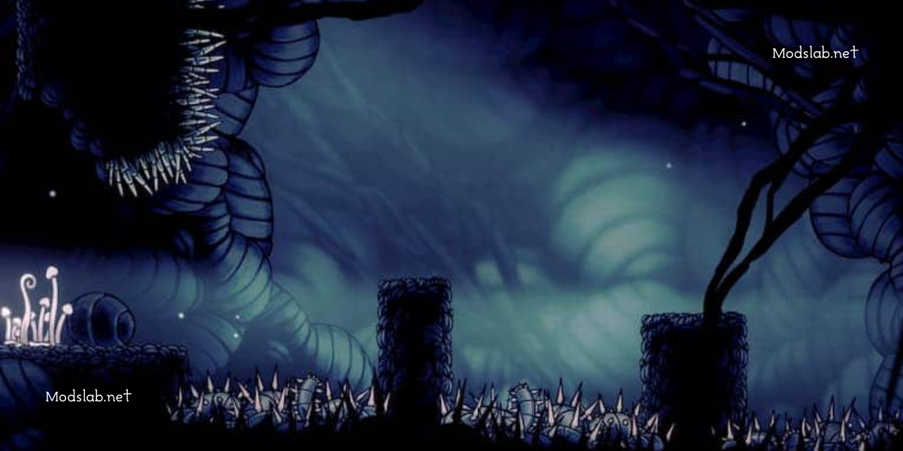
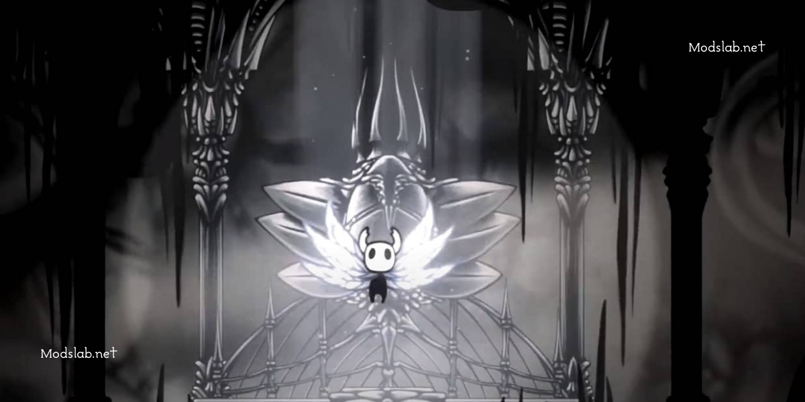
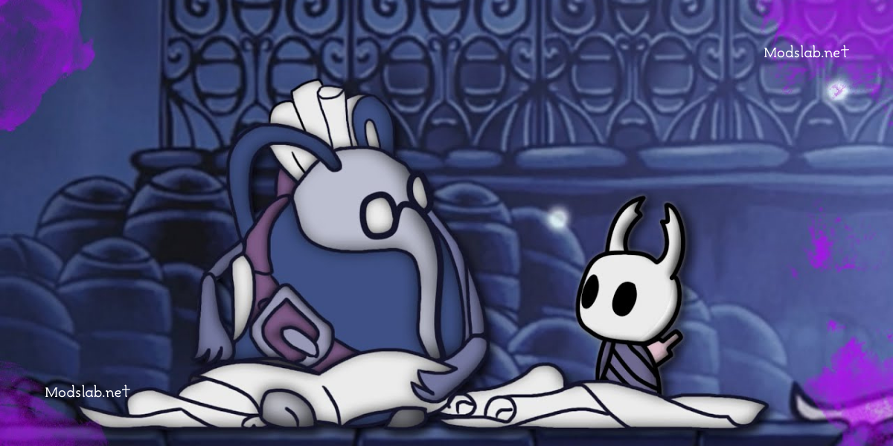

Гайд - Hollow Knight: всё, что нужно знать об игре, советы новичкам

С недавним релизом Hollow Knight: Silksong о Полом рыцаре стали вспоминать все чаще. Хотя Силксонг еще не вышла - не сложно предугадать, что принципы и концепция игры в целом останутся прежними.
Именно по этому большинство из данных советов по игре Hollow Knight подойдут даже тем, кто собирается начать свое знакомство с творчеством Тим Черри со второй части. Поехали!
СОВЕТЫ ПО ИГРЕ В HOLLOW KNIGHT: ГЛАВНЫЕ ПРАВИЛА
Дайте игре время
Очень часто люди, которые поиграли в Hollow Knight несколько часов, начинают делать поспешные и неправильные выводы. Игра раскрывается с каждым часом - вся концепция и геймплей станут явными не ранее, чем через 3 часа сконцентрированного погружения. Именно по этому приготовьтесь к тому, что в начале вашего путешествия вы увидите в легендарном Полом Рыцаре всего лишь типичный платформер с целью "попрыгать и убить".
Поверьте на слово, это просто огромнейшее заблуждение. Сюжет в игре настолько глубокий, что вы и оглянуться не успеете, как вольетесь в атмосферу Халлоунэста. На вашем пути постепенно будут появляться таблички и подсказки, намекающие на лор вселенной Hollow Knight. В общем, впечатления первых часов (или первого часа) игры в Полого - это самый большой вселенский обман. То, что покажется главной целью в начале игры, окажется просто её задним фоном и приятным бонусом хинди жанра.
Hollow Knight - это сложная игра, о чем многие твердят. Скорее всего, так говорят те люди, которые проходили платформер с начальной прокачкой и гвоздем (оружие). В Полом Рыцаре существует очень продуманная система буста вашего героя. Это означает, что те противники, которые в начале казались сложными, в итоге будут повержены буквально одним ударом. То же самое касается абсолютно всех боссов.
Не убивайте всех подряд
В этой статье мы постараемся обойтись без спойлеров, однако помните - смысл игры не в убийстве. Разработчики добавили возможность уничтожать существ лишь для того, чтобы вы пополняли свой запас манны (+заполнили журнал странника).
Просто знайте, что жуки, заселяющие Халлоунэнс, агрессивны лишь из-за их зараженности. Нету смысла убивать всех на своем пути, если вы уже хорошо изучили территорию и куда-то спешите.
Осматривайте каждый угол
Самое приятное в игре Hollow Knight - секретки. Их там просто огромное количество. В начале ваш герой не будет иметь достаточно способностей, чтобы открыть их все. Однако некоторые будут вам доступны с первых секунд игры.
Изучайте стены, бейте по ним гвоздем, заходите в темные уступы и тому подобное. Услышав своеобразный звук и увидев анимацию искорок - продолжайте ломать. Изучая, вы найдете очень много интересного, включая гусеничек, которых придется освободить.
Возвращайтесь в знакомые места
Hollow Knight заставит вас изрядно побегать, и из раза в раз возвращаться в уже пройденные локации. Запомните, что многие секретки и проходы будут закрыты до тех пор, пока вы не откроете новую способность. И зачастую такие места вы будете проходить по 10 раз, пока не получите нужный скилл.
Именно по этому не забудьте прикупить метки в магазине, которые помогут вам отмечать интересные места на карте.
Включите звук погромче
Звук в Hollow Knight играет далеко не последнюю роль. К примеру, пение Корнифера (картографа) поможет найти к нему путь, звуки гусенички также помогают быстрее обнаружить их местоположение.
Еще несколько полезных советов:
- Обращайте свое внимание на прокачку и амулеты;
- Не гонитесь за деньгами (гео), из обязательных предметов вам нужны будут лишь карты и фонарь;
- Спасайте гусеничек;
- Ищите Корнифера в каждой новой локации;
- Прокачивайте свой гвоздь у Мастеров;
- Надев некоторые амулеты, вы будете видеть больше, чем без них (грибные споры - найдете мистера гриба, амулет грез - увидите скрытые надписи, кровь улья - пчелы перестанут на вас нападать и т. д.).
Пожалуй, на этом можно закончить, чтобы избежать дальшейших спойлеров. Все остальные детали игры вы откроете для себя в самом процессе. Удачного прохождения!
Данная статья была взята с сайта modslab.net